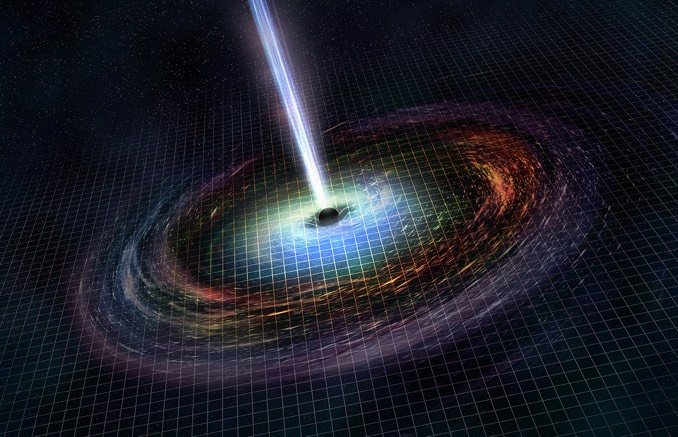

Colliding neutron stars likely formed low-mass black hole
Date published: May 29, 2018 - 11:43 AM
Gravitational waves and high-energy gamma rays from the merger of two neutron stars swept through Earth’s solar system, detected by the LIGO and NASA’s Fermi Gamma-ray Space Telescope. What happened next was not immediately clear. Did the two compact bodies merge to become a single, more massive neutron star? Or did the merger produce a black hole? Astronomers using NASA’s Chandra X-ray Observatory to study the aftermath said it appears the merger resulted in the lowest mass black hole ever discovered.
“We may have answered one of the most basic questions about this dazzling event – what did it make?” said Pawan Kumar of the University of Texas at Austin, co-author of a paper describing the observations. “Astronomers have long suspected that neutron star mergers would form a black hole and produce bursts of radiation, but we lacked a strong case for it until now.”
The gravitational waves detected by LIGO indicated the mass of the post-merger body, known as GW170817, was about 2.7 solar masses, making it either the most massive neutron star ever found or the lowest-mass black hole. The least-massive black holes found previously weighed in at four to five times the sun’s mass.
If the merger detected by LIGO and Fermi resulted in a more massive neutron star, the signal should indicate a very rapid rotation and a strong magnetic field, resulting in an expanding cloud of high-energy debris and X-ray emissions. But that is not what Chandra detected. The data showed X-ray levels up to several hundred times lower than expected.